[appext 781483331]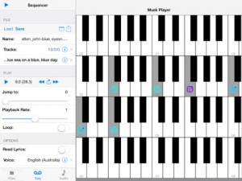Musk MIDI Player: Your instant MIDI player – just add sounds and MIDI files!
* Load any MIDI file and sound library
* Play MIDI files up to 8 times slower or faster
* Follow the MIDI notes on the keyboard and distinguish different MIDI channels
* Read along the lyrics
* Let the app speak the lyrics during playback (requires the iOS 7 voices)
* Let the app announce the bar and beat numbers. So you can easier follow the notes in a printed score.
* Mute or solo tracks or use them to navigateNavigation:
* Jump to a specific position using a slider
* To jump back to that position using the repeat button
* Jump to the position of certain meta-events (lyrics, markers, time signature, key signature and tempo changes)Supported file formats and extensions:
* MIDI (mid, midi)
* MIDI karaoke (kar)
* Sound fonts (sf2)
* Downloadable Sounds (dls)
* Logic Pro EXS-24 instrument files (exs)
* Audio Unit Presets (aupreset)
* Zip files (zip)Importing files via:
* ITunes: transmission via Mac or PC
* ICloud: synchronizes the data on all your Apple devices. (Network connection required)
* Other Apps from the manufacturer this app: All of his apps access to the same iCloud directory. (No network connection required)
* Safari: search for a website that offers SoundFonts. Click on the file. Wait until it is downloaded. Then select this app in the “Open In” dialog.
* Mail: Select the attachment and select this app in the “Open In” dialog.
* Other apps: use the “Open In” dialog. (Dropbox, Google Drive, SkyDrive)
Musk MIDI Player
AUFX:PeakQ
[appext 781852954]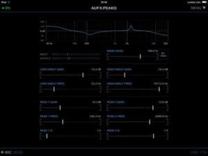A versatile 4-band parametric stereo equalizer for everything between subtle frequency enhancements and agressive boosting/cutting or special resonator effects.
This app is part of the AUFX series, a collection of simple and powerful audio effect apps.
• High quality 32-bit DSP engine.
• Two parametric peak filters with gain, frequency and Q.
• Low-shelf filter with gain and frequency.
• High-shelf filter with gain and frequency.
• Displays the resulting frequency response graph in real-time.
• Process hardware input/output.
• Process other apps through Inter-App Audio or Audiobus (input/filter/output slots supported).
• Save, load and share user presets.
• Comes with several bundled presets.
• Fully MIDI controllable, including Virtual MIDI.
• Background Audio.
• Built-in lookahead limiter to prevent clipping.
• Record the result directly in app.
• Email recordings or export to AudioShare audio document manager app.
• Access user presets and recordings through iTunes File Sharing.
Stroke Machine
[appext 773218050]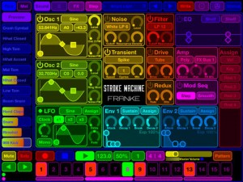Stroke Machine is a professional Drum and Groove Synthesizer and Sequencer for the iPad developed by Wolfram Franke.
Program your own rhythm and groove patterns and switch between them in a live performance. Mute or solo individual instruments, change parameters on the fly and record your performance as high-quality audio file for sharing or later editing on your computer.
The high-contrast user interface is perfectly suited for dim light situations on stage and assists in sound creation in the studio.
Stroke Machine’s powerful synthesizer engine features high-quality Oscillator, Filter, Overdrive and Effect models, extremely fast Envelopes and LFO, sample-exact Pattern Sequencer and a sophisticated Sample, Sound and Pattern library.
The deep sound creation possibilities include two oscillators with typical analog waveforms and sample playback, frequency and ring modulation and a separate white and pink noise generator with integrated multimode filter. All tone generators are summed into a transient generator, followed by another multimode filter and a drive module with several types, a sample rate and bit depth reduction stage, and a two-band equalizer with shelf and bell curves.
Freely assignable modulations with an easy-to-understand user interface offer maximum flexibility easily surpassing even expensive hardware synthesizers.
Each sound is mixed into one of four effect busses, each featuring a sum overdrive, a compressor, a modulation effect like chorus, flanger, phaser or sum filter, and a space effect like delay or clocked delay, or natural, plate or non-linear reverb.
Overview:
• 12 drum and percussion sound parts
• 12 melodic sound parts
• number of voices only limited by CPU
• 4 multi-effect busses
• pattern with up to 8 bars and 16th resolution, bar nominator and denominator freely adjustable
• swing
• modulation sequencer for smooth or quantized automation of each continuous sound and bus parameter
• 128 patterns including all sounds in direct access
• track solo and mute
• sample import
• audio export of a pattern or the whole performance
• AudioBus support
• WIST supportPer voice:
• 2 oscillators with waveforms sine, triangle, sawtooth, pulse with pulse width modulation
• sine waveforms can be changed in slope, symmetry and saturation for additional overtones
• sample playback
• frequency modulation of each oscillator by white noise and oscillator 1 by oscillator 2
• ring modulation
• noise generator with white and pink noise, variable density and multimode filter
• transient generator with crack, rattle, spike, click and thump generators
• multimode filter with 6 dB low or high pass, 12 dB and 24 dB low, band or high pass and band stop
• drive stage with light, medium, hard, clip, tube and fuzz overdrive and tone control
• redux stage (decimator) with sample rate and bit reduction
• fully parametric two-band equalizer with shelf and band types
• glide generator with portamento and glissando for melodic sounds
• voice allocation poly, mono and 3 alternate groups
• 1 LFO with waveforms sine, triangle, pulse, positive pulse, sawtooth, 4 step ramp, 8 step ramp, sample & hold, random, rate synchronizable to clock
• 2 Envelopes with (ADSR) or without (2 decay stages with breakpoint) sustain and variable slope for each stage
• modulation sources LFO, envelope 1 and 2, velocity, note number, 4 random generators, pitch bend and modulation wheel
• any continuous parameter can be modulated
• voice mixed into one of four effect bussesPer effect bus:
• sum drive stage with various types and tone filter
• compressor
• modulation effect with 2 to 6 stage chorus, 4 to 12 stage phaser or multimode filter
• space effect with stereo modulation delay, synchronizable to clock, natural, plate, or non-linear reverbMinimum requirement: iOS 6.0
Electrify NXT
[appext 771185854]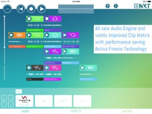Electrify is back! Electrify NXT turns your iPad into a virtual Groovebox with drum loops, synths and effects. All in realtime! Create musical clips or load samples and loops from the 1600+ samples library and arrange them on the fly in the clip matrix. Create dramatic break downs and build ups with the performance effects.
Electrify NXT runs best on iPads with Retina Displays.
• Completely rewritten and vastly enhanced audio engine with Active Freeze Technology gives you the power to create clips with effects and stunning live performances.
• The all new session mode lets you perform with loops and clips by creating arrangements on the fly.
• New brilliant sounding polyphonic FM-style Synthesizer: Electrify NXT comes with a fully fledged frequency modulating synthesizer with 11 Algorithms and wave-morphing oscillators giving you endless sound possibilities.
• The new drumkit combines 8 samplers into one grooving loop factory.
• The powerful looper and slicer lets you deconstruct audio loops or rearrange your own clips beyond recognition.
• Electrify NXT comes with more than 1600 audio loops and one shot samples from the famous Inspire Audio Collection
• A huge load of effects spices up your loops and performances.
• Powerful parameter modulation: nearly every parameter of instruments and effects can be modulated by LFOs, Envelopes or by realtime parameter sequencing.
• Add that little extra portion of groove to your clips with Flexi-Groove templates.
• Use Electrify NXT with other Apps or your Keyboard. Audiobus, AudioCopy and Midi are integrated.
Brute LFO
File this under quirky, but possibly ‘just the app for the task’ one day……
[app 777946925]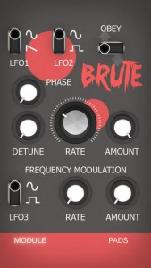The Brute LFO is a powerful low frequency oscillator that modulates your analog gear.
If you have a hardware synth that allows you to use external gear to modulate the pitch, the filter, or any other parameter, just plug the Brute LFO into the CV in and start playing.
It consists of three separate LFOs. LFO 1 and 2 can be controlled using the control elements in the top half of the screen. The big knob in he middle sets the rate of both the LFOs. Additionally you can change the waveforms of the LFOs, detune LFO 2 and change its phase. The amount knob in the top half also sets the overall amount of the modulation.
The elements on the bottom half (LFO 3) can be used to modulate the frequency of LFO 1 and 2.
And the brute switch destroys everything!
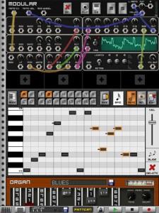Caustic 3 is a music creation tool inspired by rack-mount synthesizer/sampler rigs.
Everything is real-time and optimized for mobile devices.
Create your rack by adding up to 14 machines from a choice of:
* Subsynth – Virtual analog subtractive synthesizer
* PCMSynth – Multi-sample wave synthesizer
* BassLine – 303-like monosynth
* BeatBox – 8-channel sampling drum machine
* PadSynth – Harmonic table pad synthesizer
* 8BitSynth – 8bit equation solver synthesizer
* Modular – Fully configurable and routable synthesizer
* Organ – Tonewheel organ with rotary speaker
* Vocoder – 8-band harmonic vocoder
* FMSynth – DX-style 3-operator fm synthesizer
The app also includes:
* Effects rack supporting 2 effects per machine (16 effect types).
* Mixer desk with EQ, panning and global Delay/Reverb effects.
* Master section with effect slots, parametric EQ and limiter.
* Song sequencer
Supports automation recording on most controls and includes powerful editors for modifying automation curves.
Users can record their own WAV files for use in the PCMSynth, BeatBox, and Vocoder or import files through iTunes file sharing or the built-in FTP server.
Supports all uncompressed WAV files (8-16-24-32bit, any sampling rate).
The PCMSynth can also load SoundFont files (.sf2) and FL/Xewton instruments (.instr, .ZIP)
Exported songs can be shared using the AudioShare app.
Supports CoreMIDI for note and velocity data.
[appext 775735447]
Mini Review : BIAS
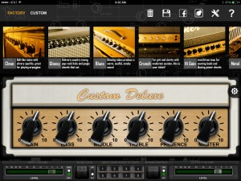BIAS is a brand new app from Positive Grid, the creators of the JamUp Pro series of guitar amp apps and the JamUp Plug audio interface for guitars.
Building on the already richly featured Jam Up apps which include a range of mix and matchable virtual guitar amp heads, speaker cabinets, and effects pedals (not to mention multitrack recording and jamming modes as well), comes Positive Grids grounding breaking new iOS app, BIAS, which takes guitar amp modelling to a whole new level of customisation and possibilities. Not only can you personalise the external look of each amp, but more importantly, you can tweak a wide range of tonal settings inside the amp in a way that hasn’t be possible until now.
If you’ve played around with any guitar amp apps in the past, you’ll be instantly familiar with BIAS’ main home screen. In the centre of the screen is the selected amp head, below this are some signal I/O settings and user defined presets, and at the top of the screen are nine categories or styles of sounds, each with four factory presets. The styles range from clean and glassy, to blues, crunch, plus there’s a group of settings for acoustic and bass guitars as well.
Pulling up any one of these 36 different amps, you have the familiar options of shaping your guitar sound by adjusting the EQ, gain, presence and master controls on the front of the amp.
Where BIAS treads new ground, is by allowing you to go virtually inside the selected amp head and tweak an unprecedented amount of tonal settings, from the preamp and power amp stages to the tone stack and even the type of power transformer.
One of the much talked about feature of BIAS’ deep customisation is the ability to switch between various tubes, which affect the gain and harmonic tone of the amp, just like they do on real guitar amps.
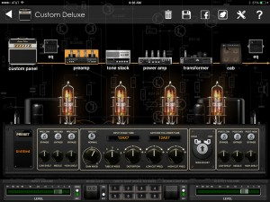The preamp stage features, 12AX7, 12AT7, and 12AU7 tubes, which can be customised in two groups of pairs. The tubes have their own gain, distortion, and hi/low frequency cut controls, plus you can adjust the number of tube stages, and there are pre and post EQ stage for even further tone shaping. And last but not least, you can alter the amount of harmonics, by adjusting the bias from hot to cold. For those a little overwhelmed by the number of possible settings, or just not sure where to even start, there are a handful of factory presets to get you up and running. And naturally you’re able to save and recall any customised settings you manage to come up with of your own.
Moving left of the preamp, is the tone stack stage. Here you’ll find a collection of more than a dozen styles of EQ, which have been inspired by classic eras in music history, from early 50’s tweed amps, and the British invasion sound of the late 50s, through to the unmistakable tones of bands like Van Halen and ACDC. And just like with the preamp, you can tweak any of these existing presets to come up with you own sounds, and save these for later use.
Then to the left of the tone stack, is arguably the most crucial stage, the power amp. This also has switchable tubes, including 6L6GB, 6V6GT, EL84, and EL34. Here you can also choose the way the power amp processes the signal, whether it’s a single ended, split load, push pull or even solid state type of amp. Other controls include the usual distortion, gain, tonal adjustments, and again the bias can be set between hot and cold.
The other key aspect of tonal customisation involves the transformer stage. There are three transformer types, which are identified simply as British, American, and fat style, each offering slight tonal differences. The other main option in this stage is the choose between solid state or tube rectifier, with GZ34 and 5Y3GT tubes to pick from. You can adjust the compression of the signal here as well. And as with all the amp and tone stack stages, here there are a few presets to get you started, and you can save and recall any of your own personal settings.
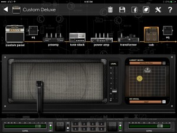There’s also a cabinet section, featuring twenty different boxes with varying speaker arrays, from single 12s, up to 8 x 10s. Here you can also choose the exact mic placement in front of the grill, as well as using either a Shure SM57, or AKG C414.
The final tonal adjustment you can make, is the option of two eight band EQs that can be literally dropped anywhere along the signal path in between any of the aforementioned amps, transformer, tone stack, and cabinet. Whether you need these or not after all the tone shaping already on tap, it’s still nice to have them available anyway.
Of course, what’s a killer sounding guitar amp you’ve just created, without an equally unique look to go with it? So head to the custom panel area where you can name your amp, and customise the grillcloth, panel, the knobs and even use a photo as a background.
There are two other key features of BIAS that are sure to secure its success.
The first, and not so unexpected feature being, that any amp you create in BIAS can be opened up and instantly ready to use in Positive Grid’s free JamUp XT or JamUp Pro XT guitar multi-effects apps. A JamUp icon is present at the top of the screen at all times in BIAS, so at any time you can fire up your customised amp by tapping the icon, thereby giving you access to all of recording and jamming features of JamUp, with your newly customised amp.
The second, and more surprising new feature that BIAS offers is called ToneCloud. This social sharing platform is build right into the app, and is designed to let users not only share their custom creations with others simply by uploading them, but also lets you download unlimited new virtual amps created by others from all over the world. And it’s a free service.
Users are invited to preview one another’s uploaded presets before deciding to download them, plus you can leave comments and ‘like’ a particular sound. Presets are filed into familiar genres, plus there is a ‘latest’ and ‘popular’ section, which is determined by the amount of ‘likes’ a preset gets from users. You can even share a patch on Facebook.
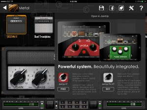ToneCloud is ideal for those still new to BIAS and are keen to build an instant library of great sounds, as well as seasoned amp modelling gurus, who just want to showcase what they have come up with.
But getting back to the roots of this app, BIAS really is an amp tweakers dream come true. Until I’d seen it first hand for myself, I wouldn’t have even considered this depth of virtual amp customisation was possible on iOS, let alone incredibly intuitive for end users to play with. Positive Grid has raised the bar with BIAS, by putting true power and untapped creativity in the hands of guitarists for the first time. Don’t let the initial daunting 30 minutes you first spend with BIAS put you off. Whether you’re a seasoned professional, or even just getting into playing electric guitar for the first time, this is one tool worth having in your musical arsenal.
For the latest info on BIAS, check the official site – http://www.positivegrid.com/bias/
UltraTuner
[appext 727157150]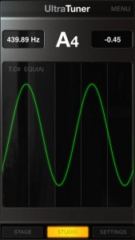ULTRATUNER – THE MOST PRECISE iOS TUNER EVER
UltraTuner features one of the fastest, smoothest and most responsive tuning engines of all the tuner apps on the market.
UltraTuner is precise to a 1/100th of a cent, far beyond human perception of pitch. In fact, it’s 10 times more accurate than a mechanical strobe tuner (considered the “gold standard” of tuners). UltraTuner’s accurate pitch detection is achieved through a proprietary dual-analysis processing engine, which allows it to get a much more accurate reading of the frequency from the incoming note than most other tuners. UltraTuner’s fast response makes tuning a mechanical instrument a breeze. Its extreme precision also makes it the perfect app tuner for intonating stringed instruments like guitar or bass, as well as for calibrating electronic instruments like vintage synths.
UltraTuner’s speed and precision provides players and engineers with a pocket-sized professional instrument tuner that’s always with them. It offers two basic modes of operation: Stage and Studio.
Stage Mode
When in Stage mode, UltraTuner is a straightforward, ultra-accurate instrument tuner featuring a unique, simple interface that’s easy to see in low-light conditions. It features a graduated flat and sharp display to indicate degrees from pitch. When the note is in tune, the display turns green. UltraTuner utilizes the entire device screen for tuning, so it is easily visible from a distance on dimly lit stages.
Studio Mode
In Studio mode, UltraTuner provides wave visualization that gives a qualitative feedback of the pitch deviation as a simple right/left motion of the real waveform of your instrument. A flat note will move the waveform to the left, while a sharp note will move it to the right. A note whose pitch is dead center is represented by a still waveform. Additionally, by simply tapping on the main studio display, it’s possible to switch to the pitch-tracking visualisation.
The pitch tracking visualisation allows players to monitor pitch over time. This is especially useful in the studio for monitoring pitch of non-chromatic instruments like vocals, violin and brass etc., on recordings over time, and very useful for vocal and instrument pitch training.
Fast calibration
In the settings window, players can quickly calibrate the “A” note, set the temperament type, set the root key for tracking and adjust the audio sensitivity. UltraTuner can use the device’s built-in microphone for audio input, and works with all analog or digital audio interfaces for iPhone, iPad and iPod touch, like IK’s iRig HD, iRig PRO, iRig STOMP, iRig and iRig MIC.
UltraTuner features:
• Innovative engine that allows responsiveness and high accuracy (+/- 0.01 cent)
• Dual modes: Stage and Studio
• Large tuning indication visible at a distance (Stage mode)
• Tuning history to see tuning variations over time (Studio mode)
• Useful not only for tuning, but also for non-chromatic instrument training
• Audiobus and Inter-app audio compatible
Music Studio update
[appext 328608539]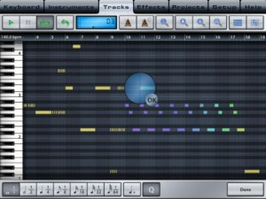Music Studio offers a complete music production environment for the iPad/iPhone/iPod Touch with features and a sound quality previously only known to desktop applications and expensive audio hardware.
It combines a piano keyboard, 118 studio-quality instruments with sustain, a fully fledged 127-track sequencer, extensive note editing, reverb, real-time effects and much more on a user-friendly interface.
What’s New in Version 2.4
*** Holiday sale: Music Studio is 33% discounted, the in-app instrument packs are available at half the price ***
Support us with your 5 star review to help keep the updates coming!
New features in Music Studio 2.4:
• 52 new high quality symphonic instruments
• New instrument list folder layout
• Polyphony can be set to 128 (on current generation devices only)
• Bug fixes
Blowfinger
[appext 767728385]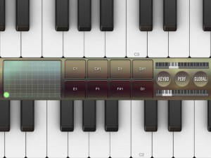The iPad becomes a super-expressive, easy-to-play wireless MIDI wind controller, using either keyboard or simple woodwind technique. (It also works as a breath controller.) Just blow into any iPhone headset mic or the optional pro mouthpiece and experience the soul-to-MIDI connection you’ve been missing.
Blowfinger Keyboard mode
• Velocity-sensitive keyboard allows you to glide between notes in a way not possible on a regular keyboard, making this an excellent musical performance addition to any set-up.
• Use the eight utility pads with user text labels to send program changes or keyswitches. Or use them to play drums and percussion – they’re velocity-sensitive.
• The XY pad offers additional expressive control in both axes, and it can be set to snap back to zero, to the center, or stay where you release it. Choose which MIDI controller is sent in each direction.
• Transpose octaves up or down with one tap (either or both keyboard manuals).Blowfinger Wind mode
• Simplified fingerings based on recorder or Boehm system allow anyone who’s ever played a wind instrument to pick up Blowfinger right away. You switch octaves with your left thumb, so once you know one octave you know them all.
• One size fits all. The keys and the thumb pads can be resized, moved, and stretched all over the screen. Play the instrument on your lap or perhaps a desk in front of you, or move the pads to the sides and hold the iPad up to your belly.
• XY right thumb pad. This has the same features as the one in Keyboard Mode, with your choice of snap back behavior and MIDI controllers.General features
• Blowfinger can work as a breath controller without sending notes; in Breath-only mode, blow without fingering and it sends a MIDI controller.
• Simultaneous support for Network MIDI over Wi-Fi, hardware MIDI, and inter-application MIDI to control synths running on the same iPad. Also supports rtpMIDI for wireless MIDI on Windows.
• While it feels great right away, you can personalize the breath response to suit your preference and also to adjust for noisy environments.
• Global transposition so you can play in the key of Cb without getting angry.


{kind=link}
{kind=link}
{kind=link}
{kind=link}
{kind=link}
{kind=link}
{kind=link}
{kind=link}
{kind=link}